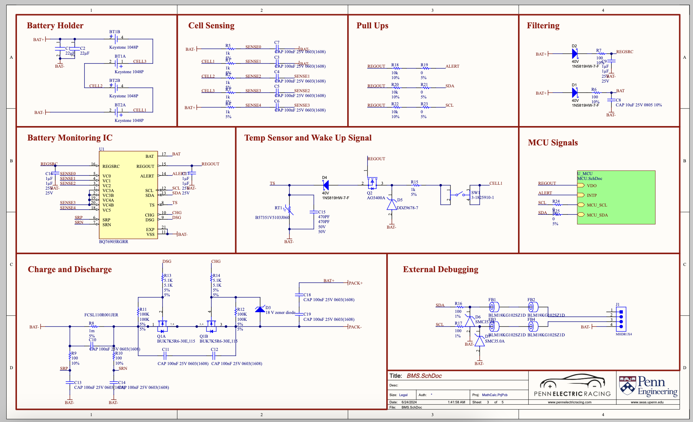

My name is Morgan and I am an Electrical Engineering and Physics student at University of Pennsylvania. I am interested in power electronics and low-level computer hardware design. I got into tech and computers from a young age (classic built a PC from watching Youtube story) and obsessed over it all throughout grade school. Once I came to college, I was introduced to PCB design by Penn Electric Racing, Penn's FSAE team. After working on the fully integrated dashboard and data acquitision device (LUDWIG), I found myself with an unsatisfiable itch to learn and build more amazing tech. And here I am, a second year engineering student eager to delve into advanced circuits and computer architecture, along with a large helping of physics...
Email: morganwg@seas.upenn.edu
LinkedIn: linkedin.com/in/morganwg
Resume: download
This year's revision of the dashboard and data acquitision device for the 2025 FSAE competition. Designed the on-board LTE, HDMI, HDMI to RGB, USB, RTC, PCIe SSD, and Fan controller systems. Looks like an alphabet soup, but these interfaces allow us to access the car's data from the cloud, simplifying the testing process.
BIG project as we are building a 4-wheel drive motor controller from scratch. Reviewing and updating previous design documents to initiate a proper knowledge transfer for later PER generations. First year will be loads of learning for me: theory for power electronics components (FETs and gate drivers), HDL for natively programming FPGA, and a newfound appreciation for EMI reduction techniques.
A fun side project inspired by my experience on the LUDWIG. The graphing calculator market is dominated by expensive T1-84's and CASIO fxs, and they also fall short in some day-to-day engineering calculations. So I started this project, a Mathematica-based calculator, allowing me to solve the toughest of integrals in a pocket-sized form factor.
Currently, I am working on the BMS design and incorporating Ansys IcePak analysis to balance weight/size with thermal stability.
More updates on the way...
Majors: Electrical Engineering & Physics